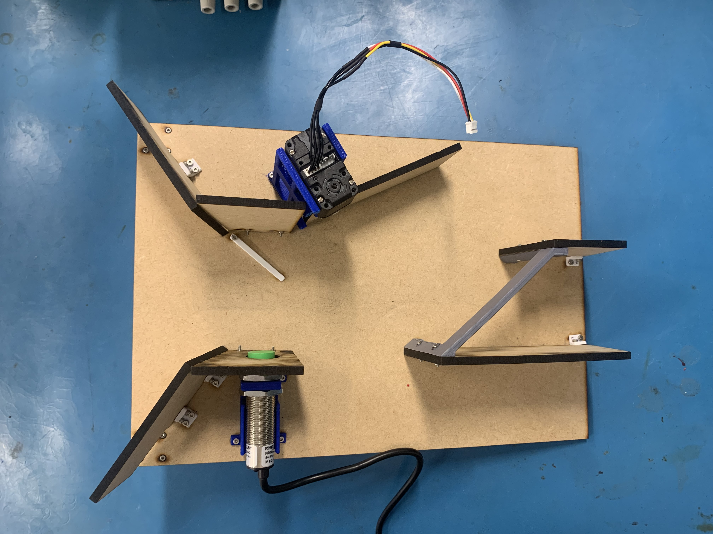
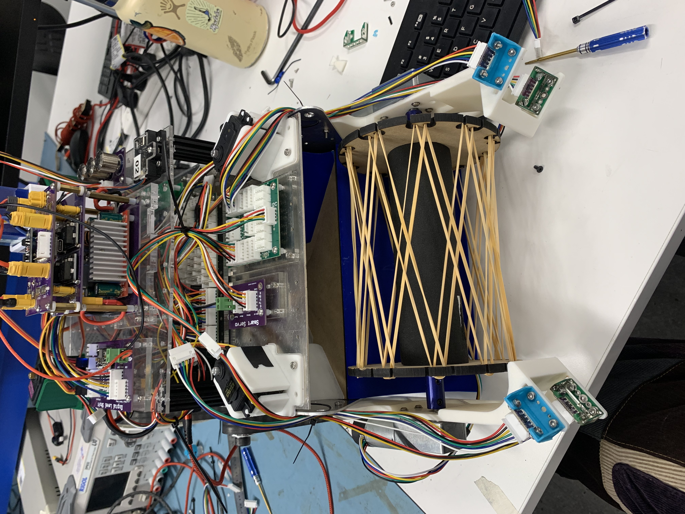
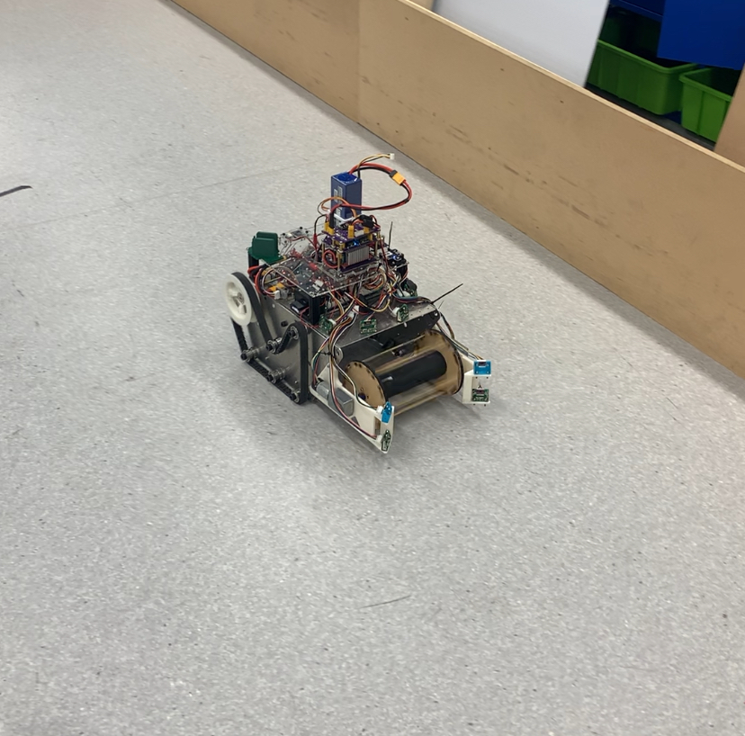

RoboCup Competition
University Project
Overview
The RoboCup competition is the highlight of the third year of the mechatronics discipline. It involes designing and builing a robot over the course of the year to compete in a competition against your classmates. My team came 8th out of 53 groups and scored 89/100.
The competition is based off the mars rover concept - the robots is required to autonomosly navigate around a changing arena, collecting metal weights and disacrding plastic ones. For extra points, the metal weights can be dropped off at the home base.
The project is unique in the degree as all of the electrical components are already decided for you and the wiring of motors, control boards and sensors was plug-and-play based off of a wiring guide. The majority of the work included implementing the navigation functionality through C++ and mechanical design of the weight collection and storage mechanisms.
My contribution to the project was the weight sorting system and the bang-bang controller used in the final navigation system.




Tools and skills
- CAD: Complex parts and assemblies designed in SolidWorks
- 3D printing and lazer cutting for rapid prototyping and final manufacture.
- Programming in C++, git branches and merges to control development of seperate features.
Limitations and Improvements
- We left the integration of the whole system to very late, and found out that it didn't work to a satisfactory level. We then had to rapidly redesign the system to a lower standard which gave us an alarmingly good result.
- This was brought about by our initial standards being too high and not being realistic about our skill level and time available for the project.